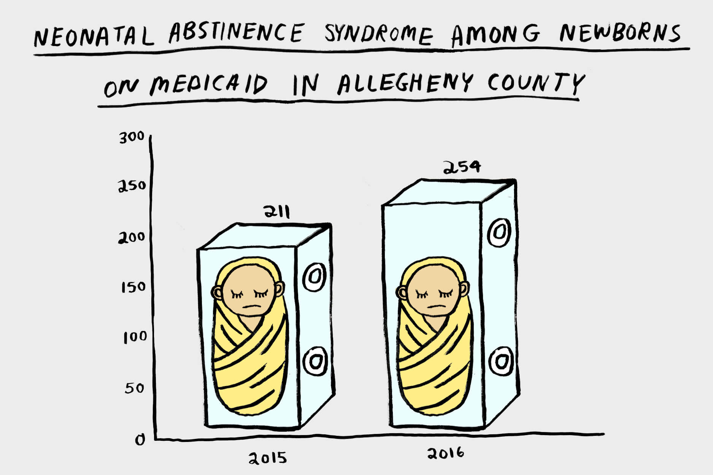
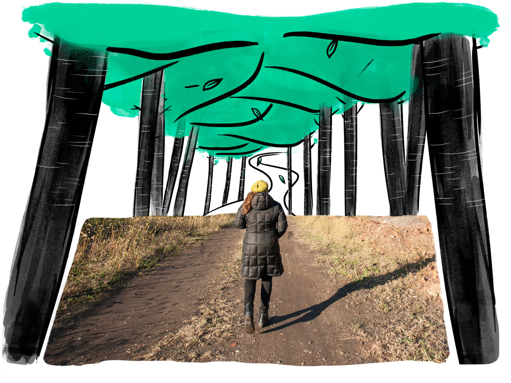
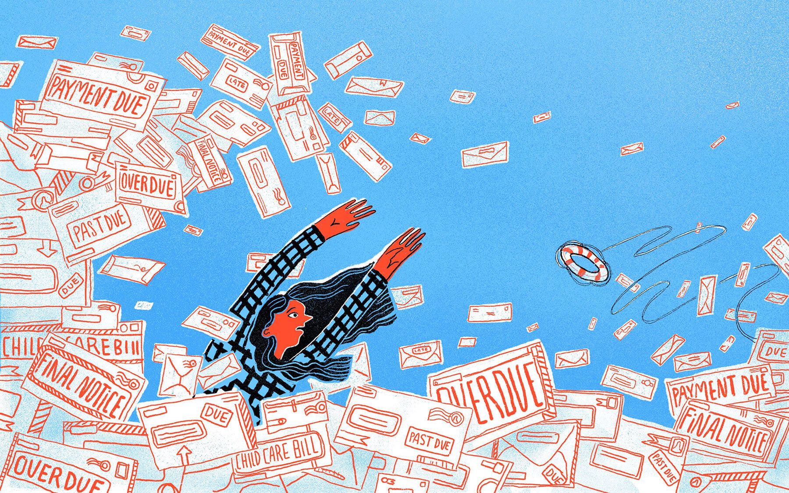
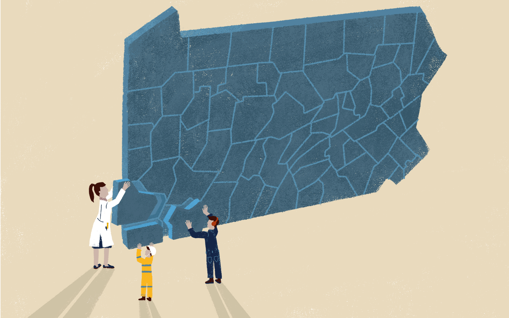

Art Direction
I've had the opportunity to art direct some extraordinarly talented illustrators and designers. I always learn a lot in the process and become inspired. Below is a sampling of some of those collaborations.

I worked with illustrator Christina Lee on this graphic and others for a data page that was a part of a project about race in Pittsburgh (I also designed and developed the website).
I again worked with illustrator Christina Lee on this graphic and others for the data page An illustrated look: The opioid epidemic by the numbers (I also did the web design and development for this series).
I worked with illustrator Idil Gözde on a series of illustrations for a project about Pittsburgh's climate future (I also designed and developed the website).
I worked with illustrator Anita DuFalla on this illustration and others for a PublicSource investigation about the Pittsburgh Police Bureau’s relationship with an IT vendor.
I worked with illustrator Sophia Pappas on this illustration for a story about threats to low wage workers.
I worked with illustrator Idil Gözde on a series of illustrations for a project on small town pennsylvania (I also designed and co-developed the website).